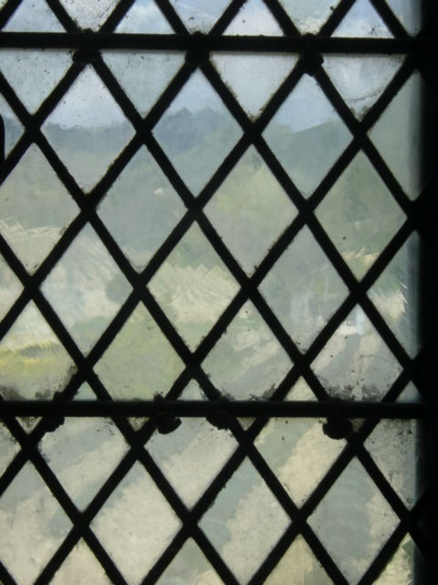
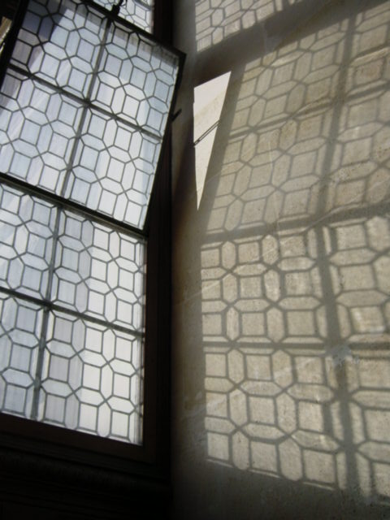
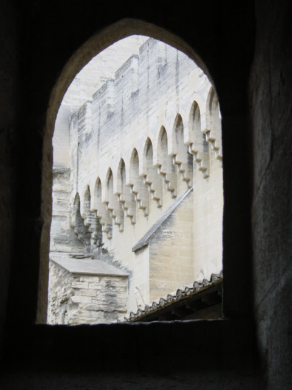
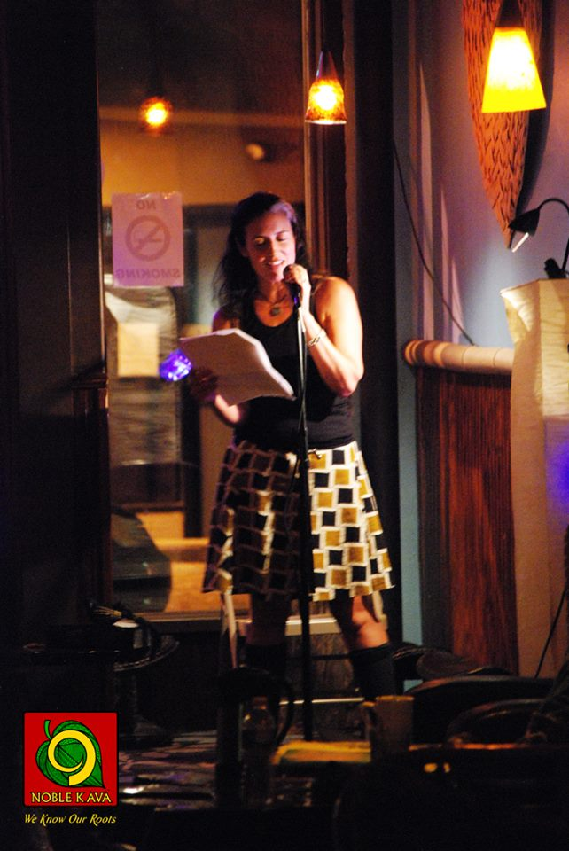
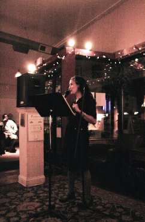
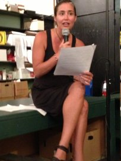

Home

Press

Writing
Links
|
Lockie's Writing
Anthologized Poetry, Prose Poetry, Flash Fiction
- Fifty Shades of Funny
- order here For more info, visit the Fifty Shades of Funny website.
- The Great American Poetry Show, Volume Two
-
Purchase Volume One or Two at The Great American Poetry Show.
From Neon Literary Magazine '"Loons" by Michael Hettich is a haunting, quiet narrative poem in which the writer and his father swim out into the middle of a lake. This can be contrasted with the much more humorous "Robinson Crusoe" by Lockie Hunter, which takes the form of a list of song titles which, read in sequence, tell the story of the famous shipwreck novel. It's a credit to the anthology that having these two pieces printed together doesn't feel uneven or ill-planned.' — Read the entire review from Neon Literary Magazine.
- "Memior 101" in the anthology Imagine Coal
- order here
Readings and Appearances



- Co-producer and co-host of WordPlay Radio on Asheville FM Every Sunday from 5-6 pm.
- Selected Shows:
November 28th, 2014 with master storyteller David Novak
September 14th, 2014 with poet Cecelia Woloch
May 11th, 2014 with poet Catherine Carter
- NC Literary Review Fall 2023 Reading, October 26, 2023 at Asheville Art Museum
- Dogwood Alliance Woods & Wilds Annual Storytelling event, October 6, 2023 at One World Brewing
- Recording: November 2023
- Writers at Home, Malaprops, March 19, 2023
- Plays Well With Others at Ginger's Revenge, October 23, 2022
- Featured reader for Writers at Home presented by UNC Asheville's Great Smokies Writing Program, March 19th, 2017 at Malaprop's Bookstore
- Host/Curator for Juniper Bends Reading Series, upcoming February 17th, 2017
- Participant in Mountain of Words Write-A-Thon for Asheville Writers in the Schools and Community
-
Read Lockie's Featured Writer profile.
Lockie participated in the 4th annual Mountain of Words Write-A-thon to support the work of Asheville Writers in the Schools and Community. This non-profit organization changes lives with creativity and literacy by connecting teaching artists with children, youth and families through innovative programs for those too often overlooked and underserved. Funds raised supported the Family Voices program in local elementary schools, summer artist residencies in programs for children from low income communities, and the new online magazine program for teens, Word on the Street.
- Host/Curator for Juniper Bends Reading Series, November 18th, 2016
- Host/Curator and Reader for the Eight Annual Queer Girls Literary Reading, August 28th, 2016
- Host/Curator for Juniper Bends Reading Series, August 19th, 2016
- Host/Curator and Reader for Stories by the River Fundraiser, May 21st, 2016
- Host/Curator for Juniper Bends Reading Series, May 6th, 2016
- Featured speaker at North Carolina Writers' Network, May 4th, 2016
- Host/Curator and reader for Stories by the River Fundraiser, March 19th, 2016
- Host/Curator for Juniper Bends Reading Series, February 5th, 2016
- Host/Curator for Juniper Bends Reading Series, November 13th, 2015
- Judge for the Social Justice Poetry Youth Slam: Soul Speak Asheville, October 4, 2015
- Host/Curator for Juniper Bends Reading Series, August 28th, 2015
- Host/Curator and Reader for the Seventh Annual Queer Girls Literary Reading, August 23rd, 2015
- Host/Curator for West End Poetry and Prose Reading Series Saturday March 14th, 2015
- Host/Curator for Juniper Bends Reading Series Friday February 13, 2015
- Host/curator and Reader at the 5th Anniversary Juniper Bends Reading Series Friday November 7th 2014
- Host/Curator and Reader for West End Poetry and Prose Reading Series Saturday October 11th, 2014
- Reader: Juniper Bends and Topside Press present: Where We're Going We Don't Need Roads, Wednesday October 8th, 2014
- Host/Curator of West End Poetry and Prose Reading Series September 13th, 2014
- Host/Curator and Reader for the Sixth Annual Queer Girls Literary Reading, August 24th, 2014
- Reader for Poetry Cabaret 2, Tuesday August 19th, 2014
- Reading at Juniper Bends Reading Series August 9, 2013
- Host/Curator for Juniper bends reading series Friday August 7th, 2014
- Host/Curator for Juniper bends over queer erotic reading Friday July 11th, 2014
- Reader: Listen to This - Stories in Performance at 35 Below (Asheville Community Theater)
"You Never Forget Your First Car - autobiographical anecdotes of inaugural automobiles", June 26th, 2014
- Host/Curator for Juniper bends reading series Friday May 9th, 2014
- Lightning Love Poet for Mad Hat's Poetry, Prose & Anything Goes, March 21st, 2014
- Host/Curator for Juniper bends reading series Friday February 7th, 2014
- Reader: Listen to This - Stories in Performance at 35 Below (Asheville Community Theater)
"Parade Stories", November 21st, 2013
- Reader: Moonshine #5 - A Night of Readings at Anam Cara Theater Collective Thursday July 25th, 2013
- Reading at Asheville's Wordfest 2013
- watch here
- Reading on WordPlay Dec 12, 2012
- listen here
Poetry: Print
- "Curious" Hiram Poetry Review, Issue 77, Hiram College, Spring 2016
- 50th anniversary issue. poster here
pdf of entire magazine here
You can also order a hard copy by visiting https://hirampoetryreview.wordpress.com
- "A Queer Activist Love Story", issue 34 of Slipstream, Rust-Dust-Lust Theme, 2014.
- order a hard copy of the lit magazine here.
Teaching
- Adjunct Professor in Creative and Media Writing at Warren Wilson College
- click here.
- Supervisor - The Echo and The Echo Reverb
- Welcome Announcement click here.
- Farewell Letter from the Editor click here.
- Faculty Advisor - Swannanoa Journal Warren Wilson College
- For a pdf click here.
Creative Nonfiction/Essays
- "How to Support Your Daughter When She Moves to San Francisco" North Carolina Literary Review Online Winter 2023
- To read it online, click here or for a pdf click here.
- "Transmission Lines" North Carolina Literary Review Online Fall 2023
- To read it online, click here or for a pdf click here.
- "My Grandmother's Love Letters" North Carolina Literary Review Online Fall 2022
- To read it online, click here or for a pdf click here.
- "One Appalachian Woman's Misadventures With Backyard Chickens: Lessons On Heritage and Homesteading" published in WNC Magazine March/April 2017
- To read it online, click here or for a pdf click here.
- "Hospice Volunteer Training, Day One: Five Scenarios" published in Gulf Stream Literary Magazine Issue 10 - December, 2013
- To read it online, click here or for a pdf click here.
- "Signal" published in The Main Street Rag Summer 2013
- Buy Here
- "In Defense of Stink" published in The Smart Set from Drexel University November 7, 2012
- To read it online, click here or for a pdf click here.
- "The Witness of High Hats" published in The Baltimore Review Winter 2012
- To read it online, click here or for a pdf click here.
- "When Freedom throws a party" published in The Christian Science Monitor March 21, 2011
- To read it online, click here or for a pdf click here.
- "Exploring Intersections: An Exercise in Dismembering and Remembering Selves" published in Brevity September 2010 issue 34
- To read it online, click here or for a pdf click here.
- "Marijuana or Roller Coaster?" published in McSweeney's Internet Tendency February 4, 2010
- For a pdf click here. To read it on McSweeney's click here.
- "Magic Strawberry Grace" published in Backyard Living - July, 2008
- For a pdf click here.
- "Room for Purple Horses" published in Hip Mama - #38 The Labor Issue, September 2007
- For a pdf click here.
- "Joyce Carol Oates and the American South: Her Use of a Southern Style" published in Celestial Timepiece
- For a pdf click here. To read it on Celestial Timepiece click here.
- "Adventures in Multitasking" published in Common Ties Feb. 19, 2007
- For a pdf click here. To read it on Common Ties click here.
- "Socrates in Training Pants" published in Literary Mama 01.05.07
- For a pdf click here. To read it on Literary Mama click here.
- "On the Peril of Ceiling Fans" published in the The Morning News, June 2006
- For a PDF, click here. To read it on the Morning News, click here.
Published Fiction
- "Lockie Confidentials - Issue 7" published in Mad Hatter's Review Issue 7
- For a pdf click here.
- "Letter to the Welfare Office from the Social Worker of the Old Woman Living in the Shoe" published in Opium Magazine March 25, 2009
- For a pdf click here.
- "Spicy Shrimp and Avocado Dip" published in Quarter After Eight volume 14
- For a pdf click here.
- "Open Letter to the Person Who Told My Mother Her Hair Looked Good This Way" published in Wild Violet Live Steel - volume VI issue 1
- For a pdf click here. To read it on Wild Violet click here.
- "Lesions" published in Foliate Oak February 2007 - Volume 2, Issue 2
- For a pdf click here. To read it on Foliate Oak click here.
- "...one new cat" published in Problem Child Tuxedo issue, Volume 20, Issue 1, fall 2006
- For a pdf click here. To read it on Problem Child click here.
- "Robinson Crusoe" published in Opium 1.12.07
- For a pdf click here. To read it on Opium click here.
- "Open Marriage" published in Chick Flicks Issue 10
- For a pdf click here. To read it on Chick Flicks click here.
- "Some Things My Sister Left Behind" published in ken*again Winter 2006/2007
- For a pdf click here. To read it on ken*again click here.
- "Hands" published in the Emerson Review Spring 2006
- For a PDF, click here.
Freelance Clips — Lifestyle & Home
- "Traditions of Thanks" published in WNC Parent Magazine - November 2010
- For a pdf click here.
- "Bend me, shape me: Asheville kids' hottest fashion accessory? Rubber bands" published in Asheville Citizen Times - Living Section, May 17, 2010
- For a pdf click here.
- "Your Father's Day Guide: Indoors and outdoors, artsy and more" published in WNC Parent Magazine - June 2009
- For a pdf click here.
- "Celebrate Mother's Day in Style" (including Lockie's mom's recipe for baked apple French toast!) published in WNC Parent Magazine - May 2009
- For a pdf click here.
- "We Give Thanks: Families Bond over Thanksgiving traditions" published in WNC Parent Magazine - November 2008
- For a pdf click here.
- "Gifts to aid, soothe the new mom" published in Asheville Citizen Times - Living Section, June 23, 2008
- For a pdf click here.
- "How to host a successful yard or garage sale" published in Asheville Citizen Times - Living Section, May 3, 2008
- For a pdf click here.
- "Bless the beasts" published in Asheville Citizen Times - Living Section, April 23, 2008
- For a pdf click here.
- "Your guide to local shelters and agencies" published in Asheville Citizen Times - Living Section, February 11, 2008
- For a pdf click here.
Freelance Clips — Food & Beverage
- "Beertown, USA: Asheville" published in Draft - September/October 2010
- For a pdf click here.
- "Beyond the Typical Cake: Move over yellow cake with buttercream - there are other birthday options" published in WNC Parent Magazine - July 2009
- For a pdf click here.
- "Toast the bride, groom" published in Asheville Citizen Times - Living Section, June 13, 2008
- For a pdf click here.
Freelance Clips — Parenting
- "Surviving the Toddler Years: Tips for getting through a plane trip, a meal out and more" published in WNC Parent Magazine - October 2010
(also appeared in the Asheville Citizen Times on September 17, 2010)
- For a pdf click here.
- "Expectations vs. Reality: Parenthood's Challenges Catch Many New Parents Off-guard" published in WNC Parent Magazine - September 2010
- For a pdf click here.
- "Get Moving Together: Parent-child classes promote fun, fitness and family time" published in WNC Parent Magazine - April 2010
- For a pdf click here.
- "Beyond Campfires: Nontraditional camps" published in WNC Parent Magazine - March 2010
- For a pdf click here.
- "Get Artsy: Visual arts classes tap children's creativity" published in WNC Parent Magazine - January 2010
- For a pdf click here.
- "Benefits of Nursing" published in WNC Parent Magazine - September 2009
- For a pdf click here.
- "Awaken the Spirit at Camp" published in WNC Parent Magazine - March 2009
- For a pdf click here.
- "Inexpensive holiday gifts for children" published in Asheville Citizen Times - Living Section, December 15, 2008
- For a pdf click here.
- "Gift ideas: Encourage creativity with board games" published in Asheville Citizen Times - Living Section, December 1, 2008
- For a pdf click here.
- "Gear Up For Baby: 10 Great Baby Gadgets" published in WNC Parent Magazine - September 2008
- For a pdf click here.
- "Summer camps offer unity with nature, opportunity for self-discovery" published in Asheville Citizen Times - Living Section, March 10, 2008
- For a pdf click here.
- "Top 10 gifts for teens and tweens" published in WNC Parent Magazine - December 2007
- For a pdf click here.
- "Top 10 gifts for baby's 1st Christmas" published in Asheville Citizen Times - Living Section, December 10, 2007
- For a pdf click here.
Freelance Clips — Travel
- "Fall Joyrides - Graham County" pubished in - WNC Magazine - October, 2011
- For a pdf click here.
- "Myrtle Beach : Go Beyond the Ocean" published in WNC Parent Magazine - May 2011
- For a pdf click here.
- "Cruising : Your Family's Ship Has Come In" published in WNC Parent Magazine - May 2011
- For a pdf click here.
- "Head North for the Winter : Boone and Blowing Rock offer cold-weather family fun" published in WNC Parent Magazine - January 2011
- For a pdf click here.
- "A Visit to Winston-Salem" published in WNC Parent Magazine - December 2010
(also appeared in the Asheville Citizen Times on November 29, 2010)
- For a pdf click here.
- "Go West: With I40 Reopened Tennessee Destinations Are Again Easily in Reach" published in WNC Parent Magazine - June 2010
- For a pdf click here.
- "Education Meets Adventure: A Family Travel Guide to 3 Historic Cities" published in WNC Parent Magazine - May 2010
- For a pdf click here.
Freelance Clips — Fashion
- "The Holidays' Finest Attire" published in WNC Parent Magazine - November 2009
- For a pdf click here.
- "Warm up the kids with uniquely Asheville fashions" published in Asheville Citizen Times - Living Section, January 14, 2008
- For a pdf click here.
Environmental Journalism
- "Skydiving Stunt" pubished in - WNC Magazine - March, 2011
- For a pdf click here.
- "River Link" aired on NPR - WPVM (Asheville) as part of the Swannanoa Journal - March, 2010
- To listen click here.
Grants, Awards and Residencies
- 2019 Arrowmont School of Crafts PENTACULUM - Artist in Residence - week long residency
- 2013-14 Regional Artist Project Grant
- To read the annoucement click here.
- 2008 Amazon Breakthrough Novel Award, Semi-Finalist
- To read an excerpt from "Girls, Girls, Out" and post a review click here. To view all the semi-finalists, click here
- 2007 New England Writers Awards, Honorable Mention - Creative Non Fiction
- To view all the categories' winners, click here
- 25th annual EVVY awards, Best Prose
- To view all the categories' winners, click here
|